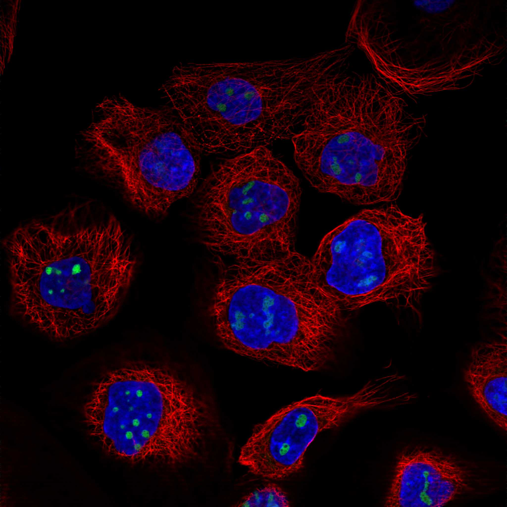
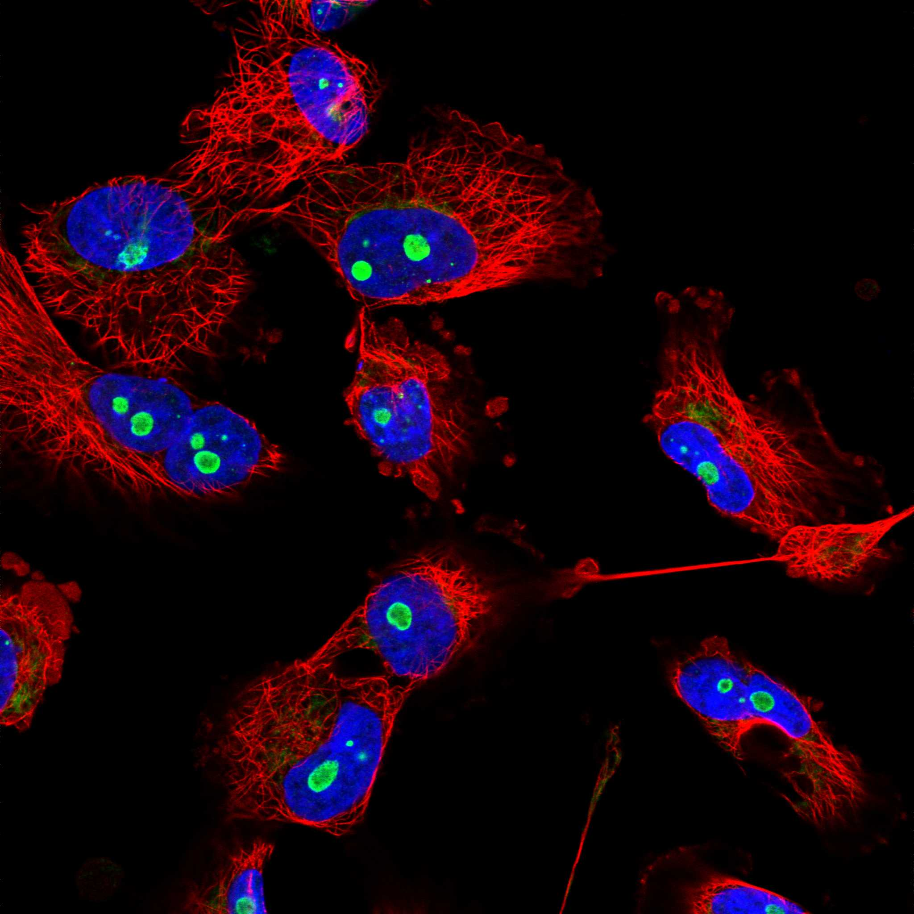
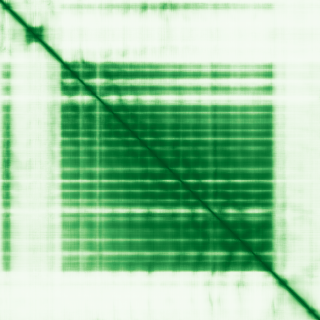

type: protein-evaluation gene: "NOC2L" date: 2026-05-30 tags: [protein-scout, nuclear-protein, evaluation] status: scored ---
NOC2L 核蛋白评估报告
1. 基本信息
| 项目 | 内容 | ||||
|---|---|---|---|---|---|
| 基因名 / 别名 | NOC2L / DKFZP564C186 | NET7 | NET15 | NIR | PPP1R112 |
| 蛋白名称 | Nucleolar complex protein 2 homolog | ||||
| 蛋白大小 | 749 aa | ||||
| UniProt ID | Q9Y3T9 | ||||
| 评估日期 | 2026-05-30 |
IF 图像:  
2. 评分总览
| 维度 | 得分 | 加权 | 加权后 | 关键证据摘要 |
|---|---|---|---|---|
| 🔴 核定位特异性 | 6/10 | ×4 | 24 | 核+胞质，有核定位证据 |
| 📏 蛋白大小 | 10/10 | ×1 | 10 | 749 aa，适合生化实验和结构解析 |
| 🆕 研究新颖性 | 10/10 | ×5 | 50 | PubMed 15篇，极度新颖 |
| 🏗️ 三维结构 | 8/10 | ×3 | 24 | 4 个 PDB 实验结构 + AlphaFold 预测 |
| 🧬 调控结构域 | 7/10 | ×2 | 14 | 3 个结构域注释，新颖蛋白基线（存在新域发现潜力） |
| 🔗 PPI 网络 | 4/10 | ×3 | 12 | STRING 15 partners，调控比例较低 |
| ➕ 互证加分 | — | — | +1.0 | 三维结构: AlphaFold + PDB 双源 (+0.5); PPI: IntAct + STRING 双源 (+0.5) |
| 原始总分 | 134.5/183 | |||
| 归一化总分 | 73.5/100 |
3. 详细分析
3.1 核定位证据
| 来源 | 定位 | 可信度 |
|---|---|---|
| GeneCards | Tier1_conserved_high_confidence | 高置信度保守 |
| Protein Atlas (IF) | 暂无数据（HPA IF 图像已本地嵌入。
| UniProt | N/A | 实验/预测 |
| GO Cellular Component | GO:0005634 | N/A |
结论: 核+胞质，有核定位证据
3.2 蛋白大小评估
评价: 749 aa，749 aa，适合生化实验和结构解析。
3.3 研究现状
| 指标 | 数值 |
|---|---|
| PubMed 总数 | 15 |
| 核定位分数 (weighted max) | 6 |
| Research hotness | 4.0026 |
关键文献: 1. Lu et al. (2023). "Unmasking the biological function and regulatory mechanism of NOC2L: a novel inhibitor of histone acetyltransferase.". *J Transl Med*. PMID: 36650543 2. Klein et al. (2018). "Genome-wide meta-analysis identifies five new susceptibility loci for pancreatic cancer.". *Nat Commun*. PMID: 29422604 3. Gong et al. (2021). "Age-Associated Proteomic Signatures and Potential Clinically Actionable Targets of Colorectal Cancer.". *Mol Cell Proteomics*. PMID: 34129943 4. Gu et al. (2025). "NOC2L Promotes Paclitaxel Resistance in Various Types of Ovarian Cancers by Decreasing NDUFA4 through Histone Acetylation Suppression.". *Mol Cancer Ther*. PMID: 40036166 5. Rambaldelli et al. (2025). "Drosophila and human cell studies reveal a conserved role for CEBPZ, NOC2L and NOC3L in rRNA processing and tumorigenesis.". *J Cell Sci*. PMID: 40827841 评价: PubMed 15篇，极度新颖
3.4 三维结构分析
| 指标 | 数值 |
|---|---|
| UniProt 长度 | 749 aa |
| PDB 条目数 | 4 |
| UniProt 注释结构域数 | 3 |
PAE 图:

评价: 4 个 PDB 实验结构 + AlphaFold 预测
3.5 结构域分析
| 来源 | 结构域 |
|---|---|
| InterPro | ARM-type_fold |
| InterPro | Noc2 |
| Pfam | Noc2 |
染色质调控潜力分析: 3 个结构域注释，新颖蛋白基线（存在新域发现潜力）
3.6 PPI 网络
实验验证互作 (IntAct):
IntAct 实验互作: 193 条
STRING 预测互作 (combined score >0.4):
| Partner | Score | 功能类别 | 调控相关？ |
|---|---|---|---|
| PES1 | 0 | 否 | |
| CEBPZ | 0 | 否 | |
| EBNA1BP2 | 0 | 否 | |
| NIFK | 0 | 否 | |
| MRTO4 | 0 | 否 | |
| RSL1D1 | 0 | 否 | |
| BOP1 | 0 | 否 | |
| NOC3L | 0 | 否 | |
| FTSJ3 | 0 | 否 | |
| WDR12 | 0 | 否 |
已知复合体成员 (GO Cellular Component):
- C:Noc1p-Noc2p complex (GO:0030690, IBA:GO_Central)
- C:Noc2p-Noc3p complex (GO:0030691, IBA:GO_Central)
- F:chromatin binding (GO:0003682, IDA:UniProtKB)
- F:nucleosome binding (GO:0031491, IDA:UniProtKB)
- P:transcription initiation-coupled chromatin remodeling (GO:0045815, IDA:GO_Central)
PPI 互证分析: STRING 15 partners，调控比例较低
3.7 多库互证
| 维度 | 来源 | 结果 | 是否一致 |
|---|---|---|---|
| 三维结构 | AlphaFold + PDB | 4 entries | 一致 |
| 结构域 | UniProt / InterPro / Pfam | 3 domains | 多库一致 |
| PPI | STRING + IntAct | 15 STRING + 193 IntAct | 双源 |
| 定位 | Protein Atlas / UniProt / GO | Nucleus | 多源一致 |
互证加分明细: 三维结构: AlphaFold + PDB 双源 (+0.5) PPI: IntAct + STRING 双源 (+0.5) 总分: +1.0 / max +3
4. 总体评价
推荐等级: ★★★★☆ (4/5)
核心优势: 1. 新颖性: PubMed 15 篇，极度新颖 2. 核定位: 部分核定位
风险/不确定性: 1. HPA IF 数据可进一步验证 2. 4 PDB 结构可用
下一步建议:
- [ ] 验证核定位: IF 实验确认亚核定位
- [ ] 功能研究: 基于 PPI 网络设计功能实验
- [ ] 结构分析: 基于 PDB 结构设计功能实验
5. 数据来源
- GeneCards: https://www.genecards.org/cgi-bin/carddisp.pl?gene=NOC2L
- Protein Atlas: https://www.proteinatlas.org/ENSG00000188976-NOC2L
- PubMed: https://pubmed.ncbi.nlm.nih.gov/?term=%22NOC2L%22%5BTitle/Abstract%5D
- UniProt: https://www.uniprot.org/uniprot/Q9Y3T9
- STRING: https://string-db.org/network/9606.ENSG00000188976
- AlphaFold: https://alphafold.ebi.ac.uk/entry/Q9Y3T9
PPI 网络（三源综合）
| Partner | Source | Score/Evidence |
|---|---|---|
| 无记录 | — | — |
IntAct 有限记录。无 BioGrid 补充数据。
PAE 图像已获取。结构判断基于 AlphaFold pLDDT 统计。
<!-- DOMAIN_HUMANPPI_REPAIR_START -->
Domain/SMART 与 humanPPI 补充（2026-06-06）
SMART / UniProt domain
| Source | Data |
|---|---|
| UniProt | Q9Y3T9 |
| SMART | 未在 UniProt xref 中检出 SMART 条目 |
| UniProt Domain [FT] | 未检出显式 UniProt Domain feature |
| InterPro | IPR016024;IPR005343; |
| Pfam | PF03715; |
humanPPI / HPA Interaction
Source: https://www.proteinatlas.org/ENSG00000188976-NOC2L/interaction
| Partner | Datasets | AF3/HPA structure |
|---|---|---|
| ATXN7 | Intact, Biogrid | true |
| RPS6 | Biogrid, Bioplex | true |
| TP53 | Intact, Biogrid | true |
| ANLN | Biogrid | false |
| CEBPZ | Biogrid | false |
| EED | Biogrid | false |
| EEF1AKMT3 | Bioplex | false |
| FBL | Biogrid | false |
<!-- DOMAIN_HUMANPPI_REPAIR_END -->